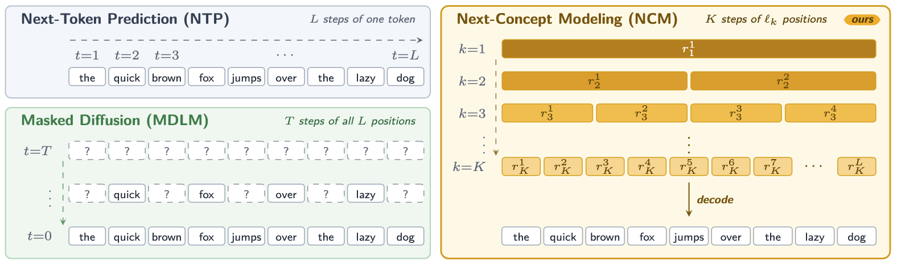
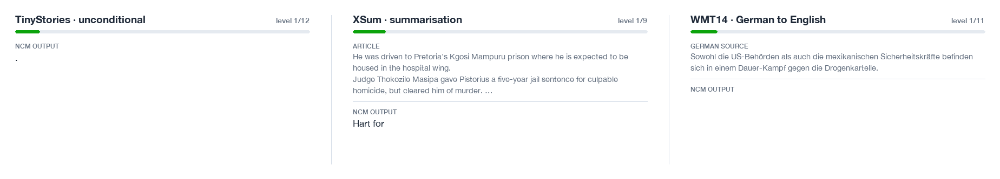
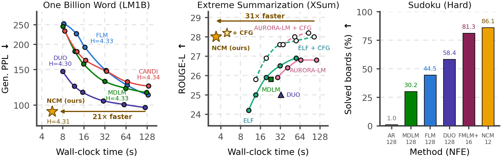

Next-Concept Modeling,
from zero.
How a machine can write a whole sentence in a dozen parallel steps — by first deciding the rough idea, then sharpening it level by level. No background needed: we start from “what is a word to a computer?” and end at every equation of the research paper.
How to read this book
Twenty-six short chapters, four parts, and about fifty things you can poke.
This book assumes you know nothing about machine learning. You will need only a little school arithmetic. Every new idea arrives with a picture or a widget you can play with, and every equation is unpacked symbol by symbol.
Signposts
Plain-language pictures of what is going on. Read these even if you skip everything else.
The precise statement, exactly as it appears in the paper, with every symbol explained.
Where this idea appears in the NCM paper, with numbers taken directly from it. Gold tags like Paper §3.3 link to the paper; blue-ish tags link to the code.
How the official implementation does it, with file names from HazyResearch/ncm.
Widgets look like the box at the top of this page: a title with a ▶ mark, a one-line instruction, then controls. Your progress (chapters you mark as read, light/dark choice) is remembered in your own browser only.
Many widgets run a toy NCM that lives entirely in your browser: an 8-word sentence world with a 39-word vocabulary. Its tokenizer is a genuine multiscale residual vector quantizer built the same way as the paper’s (average pooling down, linear interpolation up, residual codebooks). Its “generator”, however, is a simple look-up-the-neighbours stand-in for the transformer, so it can run without training a neural network. Whenever you see paper-scale numbers, they come from the paper; whenever you see toy numbers, they come from this little model.
What is a language model?
A machine that has learned which pieces of text tend to follow which.
Read this unfinished sentence: “The cat sat on the …”. You probably thought “mat”, maybe “sofa” or “floor”, and almost certainly not “banana”. Without noticing, you assigned probabilities to possible continuations. A language model is a computer program that does the same: given some text, it outputs a probability for every possible next piece of text.
A large language model (LLM) — the kind behind modern chatbots — is a language model with billions of adjustable numbers, trained on a large fraction of the written internet. But the core job is identical to the tiny one below.
Notice two things you just did:
- Generation is a loop. To write a sentence, the model predicts one word, appends it, and predicts again. Writing 100 words takes 100 trips through the model. This is called autoregressive generation (“auto” = self, “regressive” = feeding back): the model’s own output becomes its next input.
- Randomness matters. Always picking the single most likely word (greedy decoding) gives the same sentence every time and is often dull. Sampling from the probabilities gives variety.
Imagine a writer who may only ever write the next single word, then must hand the page to themselves again. That is how almost every chatbot writes today. NCM asks: what if the writer could first jot down the gist of the whole passage, then fill in more and more detail everywhere at once?
Why does this matter? Running these models (“inference”) is now one of the largest uses of computing power in the world. The paper starts from exactly this observation Paper §1: if you could produce many words per step instead of one, generation could be much faster. Two families of methods try to do this: diffusion language models (Chapter 7) and Next-Concept Modeling — the subject of this book.
Tokens: turning text into numbers
Computers only handle numbers, so text is first chopped into pieces, and each piece gets an ID.
A token is a small piece of text — a word, part of a word, or a punctuation mark. The list of all allowed tokens is the vocabulary, written \(\mathcal{T}\) in the paper. Each token has an integer ID. A sentence of \(L\) tokens becomes a list of \(L\) integers, written \(x = (x^1, \dots, x^L) \in \mathcal{T}^L\) — read “\(x\) is a sequence of \(L\) elements of the vocabulary”.
Real systems use subword tokenizers such as BPE (byte-pair encoding), which learn frequent chunks like “un”, “happy”, “ing”. Common words become one token; rare words are spelled out of pieces.
Each dataset in the paper keeps its usual text tokenizer Paper App. B, Table 4: GPT-2’s BPE for OpenWebText and XSum, bert-base-uncased for LM1B, a custom 8,192-token BPE for TinyStories, the Qwen3 tokenizer for WMT14, and a tiny 12-symbol vocabulary for Sudoku (the digits 1–9, a blank, a row separator, and a begin token — see tokenization/sudoku_tokenizer.py). Target lengths \(L\) range from 48 tokens (XSum summaries) to 1,024 (OpenWebText).
This chapter’s tokenizer turns text into token IDs. In Part II we will meet NCM’s multiscale tokenizer, which turns those token IDs into a hierarchy of codes. The paper calls both “tokenizers”; context tells them apart. In the code they are the pre_tokenizer and the vqvae respectively.
Vectors and embeddings: numbers that mean something
An ID like 4,217 says nothing about meaning. A list of numbers can.
A vector is simply an ordered list of numbers, like \((0.8, -1.2)\). The number of entries is its dimension \(d\). A vector with \(d=2\) is a point on a flat map; with \(d=3\), a point in a room; with \(d=384\) (as in the paper’s tokenizers) it is a point in a space we cannot picture, but the same rules apply. We write \(v \in \mathbb{R}^d\): “\(v\) is a list of \(d\) real numbers”.
An embedding gives each token a vector, chosen (by learning) so that tokens used in similar ways get nearby vectors. Here is our toy vocabulary with \(d = 2\):
Two measurements you will see everywhere
For vectors \(a, b \in \mathbb{R}^d\):
\[ \lVert a - b \rVert_2^2 = \sum_{c=1}^{d} (a_c - b_c)^2 \qquad\qquad a \cdot b = \sum_{c=1}^{d} a_c\, b_c \]The left one is the squared Euclidean distance: subtract coordinate by coordinate, square, add up. Small = close. The subscript 2 and superscript 2 mean “the usual length, squared”. The right one is the dot product: large when the vectors point the same way. The two are linked: \(\lVert a-b\rVert^2 = \lVert a\rVert^2 + \lVert b\rVert^2 - 2\,a\cdot b\). NCM uses this identity in its output layer (Chapter 16).
A sentence is a matrix
Put the embedding of each of the \(L\) tokens in a row, and you get a table of \(L\) rows and \(d\) columns — a matrix, written \(z \in \mathbb{R}^{L \times d}\). Row \(i\), written \(z_i\) or \(z^i\), is the vector at position \(i\). Almost every object in NCM has this shape.
Probability, softmax and sampling
The language every generative model speaks.
A probability distribution over a set of options assigns each option a number between 0 and 1, and the numbers add up to 1. We write \(p(\text{cat}) = 0.4\). A conditional probability \(p(A \mid B)\) — read “probability of \(A\) given \(B\)” — is the probability of \(A\) once we know \(B\) happened. A language model computes \(p(\text{next token} \mid \text{text so far})\).
From scores to probabilities: softmax
Neural networks output unrestricted scores called logits \(\ell_1, \dots, \ell_n\) (any real numbers). The softmax function turns them into a distribution:
\[ p_i = \frac{\exp(\ell_i / T)}{\sum_{j=1}^{n} \exp(\ell_j / T)} \]\(\exp\) makes everything positive; dividing by the sum makes it add to 1. The temperature \(T\) controls confidence: small \(T\) sharpens (approaching always picking the top option, called argmax), large \(T\) flattens.
The paper’s Algorithm 2 ends with “select output tokens by argmax”: \(\arg\max_i p_i\) means “the option \(i\) with the largest probability”. Likewise \(\arg\min\) means “the option with the smallest value” — you will see it in the quantization equations.
Multiplying probabilities: the chain rule
The probability that several things all happen equals a product of conditional probabilities: \(p(a, b, c) = p(a)\, p(b \mid a)\, p(c \mid a, b)\). If two things are independent given some information \(z\), the conditional product simplifies: \(p(a, b \mid z) = p(a \mid z)\, p(b \mid z)\). This single simplification is what lets NCM generate many codes at once (Chapter 15). The big \(\prod\) symbol means “multiply all of these”, just as \(\sum\) means “add all of these”.
Measuring surprise: −log p and cross-entropy
To train a model we need a single number saying how wrong it is. If the correct answer is \(y\) and the model gave it probability \(p(y)\), the negative log-likelihood is \(-\log p(y)\). Averaged over many examples it is called the cross-entropy loss. (Throughout this book, \(\log\) means the natural logarithm.)
How machines learn
Parameters, a loss, and many small steps downhill.
A model is a function with adjustable numbers inside, called parameters (or weights), usually written \(\theta\) (theta), \(\phi\) (phi) or \(\psi\) (psi). The paper uses \(\phi\) for the tokenizer’s encoder, \(\psi\) for its decoder and \(\theta\) for the generator. Training means finding parameter values that make the loss small on example data.
The workhorse is gradient descent: compute the gradient — the direction in which the loss increases fastest — and take a small step the other way. The step size is the learning rate \(\eta\) (eta).
In practice the gradient is estimated on a batch of examples at a time; one such step is an update. Real training uses a smarter variant called AdamW. The paper lists, for each model, the number of updates, batch size and learning rate Paper App. C, Tables 5–6. Multiplying updates × batch size × sequence length gives the number of training tokens — a key cost NCM reduces (Chapter 20).
Training adjusts parameters using known answers; it happens once and is expensive. Inference (also: sampling, generation) uses the frozen model to produce new outputs; it happens every time someone uses the model. NCM is designed to make inference fast, and it also happens to need less training data.
Neural networks and the transformer
The machine inside every modern language model — and inside NCM.
Neurons and layers
A neural network is built from many simple units. Each takes numbers in, computes a weighted sum, and applies a non-linear “squashing” function.
Stacking thousands of these in layers gives a function that can represent remarkably complex patterns. A linear layer is just matrix multiplication; a projection to a different width (the paper: “project the resized vectors to the hidden width”) is one such layer.
Attention
The transformer adds one crucial operation: self-attention. For each position, the network computes a query vector \(q\); for every position a key \(k\) and a value \(v\). Position \(i\) then takes a weighted average of all values, with weights \(\operatorname{softmax}(q_i \cdot k_j / \sqrt{d})\). Positions whose keys “match” the query get more weight. This is how a word gathers information from the rest of the sentence.
A transformer block = attention + a small feed-forward network, each with normalisation. The paper’s generators stack 12 such blocks with hidden width 768 and 12 attention heads for most tasks (8 blocks, width 512 for Sudoku; up to 36 blocks, width 1,280 for the 725M scaling model) Paper App. C.2.
Masks decide who sees whom
An attention mask forbids some query–key pairs. The mask is what turns the same architecture into different kinds of model:
With a causal mask, earlier positions never change when new tokens arrive, so their keys and values can be saved and reused — a KV cache. Each new step then processes just one new token. Bidirectional models cannot do this directly: changing any token changes every representation. The paper lists this as reason (ii) diffusion steps are expensive Paper §1.
NFE: the unit of generation cost
One complete pass through the network is a function evaluation. The number of function evaluations (NFE) needed to produce one output is the main speed measure in the paper. Fewer NFE means fewer sequential steps — but, as we will see, the cost per evaluation matters too.
Three ways to generate text
Left to right, everything at once, or coarse to fine.
The paper opens with a comparison of three generation paradigms Paper Fig. 2. Here it is, animated. Count steps and work.
1 · Autoregressive (next-token prediction)
One token per step, \(L\) steps for \(L\) tokens. Each step is cheap thanks to KV caching, but the steps cannot run in parallel, and the model can never revise an earlier word. On Sudoku, where every cell constrains others, this is fatal: autoregressive baselines solve only about 1% of hard boards Paper Table 3.
2 · Diffusion language models
A masked diffusion model starts from a sequence where every position is a blank “?” and, over \(T\) steps, fills in (“denoises”) more and more positions, predicting all positions in parallel at every step. Popular examples named in the paper include MDLM, DUO, SEDD, LLaDA, and commercial systems such as Mercury. Continuous diffusion and flow models (FLM, ELF, CANDI, AURORA-LM…) do something similar on vectors instead of blanks.
The paper identifies three practical problems Paper §1:
- Many sampling steps. Quality drops quickly when you reduce \(T\). Positions revealed in the same step are chosen independently, so they can contradict each other:
- Expensive steps. Every step processes the whole length-\(L\) sequence with bidirectional attention, so no KV cache.
- Large training budgets. Strong baselines like DUO and MDLM train on OpenWebText for 1M steps, over 500B tokens.
Fixes exist — distilling a many-step model into a few-step one, or “block” diffusion that generates chunks left to right — but they add training stages, tend to reduce diversity, or give up some parallelism.
3 · Next-Concept Modeling
NCM changes what is generated. It first learns to describe text as a hierarchy of \(K\) levels of discrete codes: level 1 has very few codes (often one), each later level has more, and the last level has \(L\). Then a transformer generates level 1, then level 2, … in \(K \ll L\) steps (“\(\ll\)” means “much less than”), predicting all codes of a level in parallel. Early steps are also cheap because they involve few positions.
- LM1B: better generative perplexity than the strongest diffusion baseline (DUO) while running 21× faster.
- OpenWebText: competitive with the strongest diffusion model, 10× faster.
- XSum summarization: matches the strongest diffusion model’s ROUGE-L while 31× faster.
- Sudoku: beats autoregressive and diffusion baselines at every difficulty with fewer NFE.
- About 4–5× fewer training tokens than strong diffusion baselines.

The big idea: coarse to fine
Decide the gist first, the details last.
When you write an essay you do not choose words strictly left to right. You decide the topic, then an outline, then paragraphs, then sentences, then exact words — and you revise. A painter blocks in big shapes before fine strokes. NCM gives a machine this same habit.
For images this is natural: a coarse image is just a blurrier one. The image models VAR (“next-scale prediction”) and HMAR (co-authored by NCM’s first author) generate pictures exactly this way Paper §2, refs [21, 22]. Text is harder: there is no obvious way to “blur” a sentence. Averaging the IDs of two words is meaningless.
Do not blur the tokens — blur their vectors. Map the text to a matrix of vectors \(z\), and describe \(z\) at several resolutions using discrete codes: first a handful of codes summarising long stretches of text, then more codes for shorter stretches, down to one code per token. The coarse codes carry what the paper calls concepts: “the term concept here refers to the information carried by the coarse levels of the hierarchy” Paper §3.
The whole system therefore has two stages, trained one after the other Paper Fig. 4:
- Stage 1 — learn a multiscale tokenizer (a multiscale residual VQ-VAE): an encoder turns text into vectors, a quantizer turns vectors into \(K\) levels of codes \(r_1, \dots, r_K\), and a decoder turns codes back into text. Chapters 9–14 build it.
- Stage 2 — learn to generate: freeze the tokenizer, and train a transformer to produce the codes level by level. Chapters 15–21.
Each of the next chapters adds exactly one ingredient of the name “multiscale residual VQ-VAE”: autoencoder (VAE) → vector quantization (VQ) → residual → multiscale.
Autoencoders: compress, then rebuild
Learn a representation by requiring that the input can be reconstructed from it.
An autoencoder has an encoder \(E_\phi\) that maps the input to an internal representation (a latent), and a decoder that maps the latent back to the input. It is trained so the output matches the input. Whatever the latent must contain to make this possible is, by construction, a summary of the input.
The encoder turns the \(L\) tokens into \(L\) latent vectors of dimension \(d\) (384 for most of the paper’s tokenizers; 256 for Sudoku in the released config). The decoder, with parameters \(\psi\), defines probabilities \(p_\psi(x^i \mid \cdot)\) for the token at every position \(i\).
In models/vqvae.py the encoder is a token embedding (plus position embedding and, optionally, transformer layers) followed by a GroupNorm “pre-quantization” normalisation; the decoder is a stack of transformer blocks ending in a softmax over the text vocabulary. The decoder’s output is turned into text by argmax.
Our toy uses the simplest possible version: the encoder is a fixed table of 2-D word vectors, and the decoder picks the nearest word. A real one is learned, but the logic is the same.
Vector quantization: from vectors to codes
Replace each vector by the nearest entry of a fixed list, and remember only which entry.
A generator that outputs continuous vectors is awkward: exact values are hard to predict. Language models are good at choosing from a list. Vector quantization (VQ) bridges the two: keep a codebook \(\mathcal{V} = \{e_1, \dots, e_{|\mathcal{V}|}\}\) of vectors, and replace every latent vector by its nearest codebook entry. The index of that entry is a code — a small integer, just like a token ID.
For position \(i\), look at every codebook vector \(e\), compute the squared distance to \(z^i\), and keep the closest. \(|\mathcal{V}|\) is the codebook size (4,096 or 8,192 per level for text in the paper; 16 for Sudoku in the released configs). The quantized latent \(z_q\) has the same shape \(L \times d\) as \(z\).
How the codebook is learned
Pressing “k-means step” above moved each codebook entry to the average of the data points assigned to it — the classic k-means algorithm. VQ-VAEs (introduced by van den Oord et al., the paper’s ref. [20]) learn the codebook during training. The NCM code uses a smoothed, online version: an exponential moving average (EMA) of the assigned vectors, updated every batch with a decay of 0.95–0.99 (see MultiscaleResidualVectorQuantizer.forward in models/quant.py).
If an entry is never the nearest to any data, it is wasted (“dead code”). Re-initialise the widget with 16 entries and count how many get used. The paper reports mean utilization between 62% and 90% across its datasets Paper Table 1.
Residual quantization: fix what is left
Quantize, measure the error, quantize the error, repeat.
One codebook leaves an approximation error. Residual quantization (from neural audio codecs such as SoundStream, the paper’s ref. [29]) represents that error with a second codebook, the remaining error with a third, and so on. The everyday analogy is paying an exact amount with coins of decreasing value:
The same works for vectors. Each level uses its own codebook and only has to describe what earlier levels missed:
Start with residual \(z^{(0)} = z\) and reconstruction \(\hat z^{(0)} = 0\). At level \(k\), quantize the residual into codes \(r_k\), then update
\[ \hat z^{(k)} = \hat z^{(k-1)} + e_k(r_k), \qquad z^{(k)} = z - \hat z^{(k)} \]- \(e_k(r_k)\): look up the chosen codes in level \(k\)’s codebook (\(e_k(r_k)^i = e_{k, r_k^i}\)).
- \(\hat z^{(k)}\), the cumulative reconstruction: the sum of everything chosen so far. The hat “^” means “estimate of”.
- \(z^{(k)}\), the residual: what is still missing.
After all \(K\) levels, \(\hat z^{(K)} = \sum_{k=1}^K e_k(r_k) \approx z\). Every partial sum \(\hat z^{(k)}\) is itself a usable, rougher reconstruction.
Residual quantization automatically orders information: level 1 captures the biggest part of the vector, later levels refine it. A generator can produce level 1 first and the refinements later — coarse to fine. What is still missing is the “multiscale” part: here every level still has one code per position.
Multiscale residual quantization: the heart of NCM
Coarse levels use few codes, each covering a long stretch of text.
Now combine residual quantization with changing resolution, as VAR does for images. Level \(k\) has only \(\ell_k\) codes, where \(\ell_1 < \ell_2 < \dots < \ell_K = L\). Level 1 might have a single code for the whole text; the last level has one code per token. To make this work, each level downsamples the residual to \(\ell_k\) positions before quantizing, and upsamples the result back to \(L\) positions before adding it to the reconstruction.
The tokenizer maps text to codes at \(K\) levels:
\[ r_{1:K} = (r_1, \dots, r_K), \qquad r_k \in \{1, \dots, |\mathcal{V}_k|\}^{\ell_k} \]“\(r_k\) is a list of \(\ell_k\) integers, each between 1 and the size of level \(k\)’s codebook.” At level \(k\):
\[ u_k = \operatorname{Down}_k\!\big(z^{(k-1)}\big) \in \mathbb{R}^{\ell_k \times d}, \qquad r_k^i = \arg\min_{j \in \{1,\dots,|\mathcal{V}_k|\}} \lVert u_k^i - e_{k,j} \rVert_2^2 \] \[ \hat z^{(k)} = \hat z^{(k-1)} + R_k\big(e_k(r_k)\big), \qquad z^{(k)} = z - \hat z^{(k)} \]- \(\operatorname{Down}_k\): shrink the \(L \times d\) residual to \(\ell_k \times d\).
- \(r_k^i\): the code for the \(i\)-th of the \(\ell_k\) slots — nearest entry of codebook \(\mathcal{V}_k\).
- \(R_k\), the reconstruction operator: stretch the \(\ell_k\) chosen code vectors back to an \(L \times d\) contribution.
- Both \(\hat z^{(k)}\) and \(z^{(k)}\) always have the full shape \(L \times d\).
Watch it happen on one channel of a 16-position latent:
In models/quant.py (MultiscaleResidualVectorQuantizer):
- Downk is
F.interpolate(…, mode="area"): average pooling over equal stretches of positions. For level 1, a small learned strided convolution (initialised to plain averaging) replaces it. - Rk is
F.interpolate(…, mode="linear")— linear interpolation back to \(L\) positions — followed by a per-level 1-D convolution “\(\Phi\)” that blends \((1-r)\,h + r\,\mathrm{Conv1d}(h)\) with \(r = 0.5\). Level 1 uses a learned transposed convolution. - The last level (\(\ell_K = L\)) needs no resampling.
- Codebooks are updated by EMA, not by gradients.
A working tokenizer you can inspect
Here is the toy tokenizer used throughout the book, applied to real (toy) sentences. Its five levels have 1, 2, 4, 6 and 8 codes. Watch the decoded text go from a single repeated filler word, to roughly the right kinds of words, to the exact sentence:
The paper shows a German→English translation decoded after each level Paper Fig. 3, Table 12. After level 1, the output is the right opening word followed by filler and repetitions; by the middle levels the key content words (the subject, the main verb) are in place but repeated; the last levels remove repetitions and fix the details. The GIF below, from the official repository, shows the same coarse-to-fine refinement on TinyStories, XSum and WMT14 samples.

Training the tokenizer
A reconstruction loss, two vector-quantization losses, nested dropout and a gradient trick.
Nested dropout: make early levels meaningful
A danger: the tokenizer could put almost nothing in the coarse levels and rely on the fine ones. Then generating coarse levels first would be pointless. Nested dropout prevents this by sometimes throwing away all levels after a random cut-off \(k\) during training, so the decoder must rebuild the text from \(\hat z^{(k)} = \sum_{j=1}^{k} R_j(e_j(r_j))\) alone Paper §3.3.
The tokenizer loss
- Term 1, reconstruction: cross-entropy of the true tokens under the decoder, evaluated at the sampled cut-off \(k\).
- Term 2, commitment: mean squared error (MSE = average of squared differences) pulling the encoder’s \(z\) toward its quantized version. \(\beta\) weights it (0.25 in the released configs).
- Term 3, quantization: pulls the quantized vectors toward \(z\).
- sg[·], stop-gradient: “treat this as a constant”: gradients do not flow through it. That is how terms 2 and 3 can train different parts.
The straight-through estimator solves a basic problem: \(\arg\min\) is a jump, with no useful slope, so gradients from the decoder would never reach the encoder. The trick, written in code as z_hat = z + (z_hat - z).detach(), uses the quantized value in the forward pass but pretends quantization was the identity in the backward pass.
How good is the tokenizer?
For text, reconstruction must be essentially perfect: one wrong digit invalidates a Sudoku; one wrong name changes a news summary’s meaning.
| OWT | LM1B | TinyStories | XSum | WMT14 | Sudoku (E/M/H) | |
|---|---|---|---|---|---|---|
| Exact reconstruction (%) | 99.99 | 99.86 | 99.98 | 99.79 | 98.79 | 100 / 100 / 100 |
| Codebook utilization (%) | 83.10 | 89.31 | 90.12 | 86.20 | 61.89 | 80.73 / 83.85 / 80.73 |
Paper Table 1. Reconstruction accuracy = fraction of held-out tokens recovered exactly using all levels.
When reconstruction does fail on OpenWebText (about 1 token in 10,000), the paper finds the errors are mostly “near misses”: a city swapped for a neighbouring city in a list, a year off by one in a sequence of years, a dropped diacritic, a garbled username or bit of markup, or a merged word boundary Paper App. G, Table 11. Accuracy climbs steadily with each level, reaching 99.99% at full resolution (Fig. 16).
Level schedules: how many levels, how fast they grow
Two design knobs: the number of levels K and the sizes ℓ₁ … ℓ_K.
The number of levels \(K\) is the number of generation steps. The schedule \(\ell_1, \dots, \ell_K\) says how many codes each level has. Both are fixed before training.
What the ablations found (TinyStories)
An ablation changes one design choice and keeps everything else fixed. The paper runs several on TinyStories Paper App. F.1.
- More levels help, with diminishing returns. Going from 4 to 8 levels cuts Gen. PPL by about 52%, 8→16 by 32%, 16→32 by 20% (Fig. 9). All four hierarchies reconstruct at least 99.95% of tokens.
- Schedules that stay small early win. Exponential (57.7) and quadratic (59.6) are best; square-root (196.7) and logarithmic (168.2), which jump to many codes immediately, are worst (Fig. 10). Front-loading many codes forces the model to decide lots of detail before it has the gist.
The released checkpoints use hand-written schedules (manual_levels in config/eval/*.yaml): roughly linear for TinyStories/LM1B, exactly quadratic \(\ell_k = k^2\) for OpenWebText (1, 4, 9, …, 1024 with \(K = 32\)), and slowly-starting curves for Sudoku and WMT14. Switch the widget to “released checkpoints” to see them.
The probability model: levels in order, codes in parallel
Two equations define everything the generator does.
With the tokenizer frozen, every text \(x\) corresponds to a hierarchy of codes \(r_{1:K}\). To generate text, it is enough to generate codes and decode them. So we need a probability model for code hierarchies, \(p_\theta(r_{1:K})\).
This is the chain rule from Chapter 4, applied to levels instead of tokens: generate level 1, then level 2 given level 1, and so on. One detail is clever: level \(k\) is conditioned not on the list of earlier codes but on their cumulative reconstruction \(\hat z^{(k-1)}\) — one tidy \(L \times d\) matrix that already sums up everything decided so far.
Given \(\hat z^{(k-1)}\), the \(\ell_k\) codes of level \(k\) are treated as independent. Independence means they can be sampled simultaneously from one forward pass. This is the source of NCM’s parallelism.
But wait — Chapter 7 showed that sampling positions independently produces nonsense like “New Angeles”. Why is it acceptable here?
At level \(k\), the big decisions — the topic, the city, the overall layout — were already made by coarser levels and are baked into \(\hat z^{(k-1)}\). Each level only adds detail on top. So the remaining uncertainty per code is smaller and less entangled with its neighbours. Where independence still causes mistakes (you will see repeated words at middle levels), later levels can correct them, because each level writes on top of the whole sequence rather than committing tokens forever. The paper notes intermediate outputs are not monotonically better and that occasional artifacts at level transitions remain an open issue Paper App. I, J.2.
After the last level, the tokenizer’s decoder turns \(\hat z^{(K)}\) into token probabilities at all \(L\) positions, and the output tokens are chosen by argmax.
The Next-Concept Transformer
What goes in, how it attends, and what comes out.
Inputs: resized reconstructions
To predict level \(k\) (\(\ell_k\) codes), the transformer needs \(\ell_k\) input positions. It gets them by shrinking \(\hat z^{(k-1)}\) from \(L\) positions to \(\ell_k\) (average pooling, the same “area” resizing as the tokenizer), projecting each vector to the hidden width, and adding a learned level embedding that tells the network which level it is working on (positions are encoded with RoPE, a rotation-based position encoding).
Attention: block-diagonal
During training, the blocks for all levels sit in one long sequence. Which blocks should see which? Since block \(k\)’s input already summarises all earlier levels, it does not need to look back. NCM uses block-diagonal attention: each block attends only to itself (and, for conditional tasks, to the prompt).
On TinyStories with everything else fixed Paper App. F.2.1, Table 9: block-causal → Gen. PPL 19.63, 7.90 s; two-level sliding window → 17.84, 6.83 s; block-diagonal → 15.41, 5.65 s. Seeing less works better and is faster.
Outputs: one probability table per code position
For each of the \(\ell_k\) positions, the network outputs logits over level \(k\)’s codebook (4,096 or 8,192 entries), turned into probabilities by softmax. The released text models tie this output layer to the codebook itself:
_TiedCodebookHead in models/next_concept.py: “Distance form, the inverse of z_to_idx’s argmin”. The logits are \(\big(2\,p\cdot e_j - \lVert e_j\rVert^2\big)/\overline{\lVert e\rVert^2}\) times a learned sharpness \(\exp(\texttt{log\_inv\_T})\). The \(\lVert p\rVert^2\) term is the same for every \(j\), so it cancels inside the softmax (Chapter 3’s identity).
Training the generator (Algorithm 1)
All levels in one forward pass, with a little deliberate noise.
Training uses teacher forcing: we encode a real text into its true codes, build every level’s input from the true earlier levels, and ask the model to predict every level at once. One forward pass, one loss, one update.
Conditioning corruption
At generation time, the model reads its own earlier samples — with mistakes it never saw during training. Because a whole level is sampled in parallel, several mistakes can enter at once and compound. NCM therefore trains on slightly corrupted inputs.
The loss, with level weights
- \(\tilde z^{(k-1)}\): the reconstruction built from the corrupted codes \(\tilde r\); the targets \(r_k^i\) are the clean codes.
- The inner sum is the cross-entropy over the \(\ell_k\) codes of level \(k\).
- \(w_k\) balances levels. Fine levels have many more codes, so with equal weight per code they dominate the loss; \(\alpha\) shifts weight toward the coarse levels.
Generators have about 100M parameters (25M for Sudoku), 12 transformer blocks, width 768, and are trained with AdamW for 50k–350k updates depending on the dataset Paper App. C.2, Table 6. For translation and summarization the generator is first trained on unpaired text, then on source–target pairs.
Generating text (Algorithm 2)
K forward passes, coarse to fine, then decode.
1: ẑ(0) ← 0
2: for k = 1, …, K:
3: resize ẑ(k−1) to ℓ_k positions
4: project the resized vectors to the hidden width
5: predict code distributions in one forward pass
6: sample all ℓ_k codes r_k^i in parallel
7: ẑ(k) ← ẑ(k−1) + R_k(e_k(r_k))
8: end for
9: decode ẑ(K) to token distributions
10: select output tokens by argmaxRun it yourself on the toy model. Lower temperature gives safer, more repetitive samples; higher gives more variety (and more mistakes).
Level 1 has no earlier reconstruction to read. In the released TinyStories configuration, its code is drawn from the empirical frequency of level-1 codes in the data (level0_unigram), exactly what our toy does. For conditional tasks such as Sudoku, learned query vectors attend to the prompt and predict level 1 (query_level0 in models/next_concept.py). Sampling uses temperature and optional top-k / top-p filtering; Sudoku uses temperature 0 (argmax).
Watching quality build up
Prompts, guidance and MBR decoding
Generating text that answers to an input — and spending saved time on quality.
Prompts: a prefix that everyone can read
For translation (German → English), summarization (article → summary) or Sudoku (puzzle → solution), NCM uses a prefix-LM pattern Paper §3.4. The prompt tokens are embedded with the frozen tokenizer’s own embedding table and placed in front. Prompt positions attend to each other; every target block attends to the prompt and to itself; the prompt never looks at the targets. Add prompt tokens in the mask widget of Chapter 16 to see this pattern (teal columns).
Using a frozen pretrained T5-small encoder for the prompt gives only +0.10 to +0.24 ROUGE on XSum but adds 35.3M parameters (~40% more) and an external dependency, so NCM keeps its own embedding Paper App. F.2.2, Table 10.
Classifier-free guidance (CFG)
Minimum Bayes Risk (MBR) decoding
NCM is so cheap that, in the time a diffusion model makes one sample, NCM can make many and choose the best. MBR picks the candidate that is most similar, on average, to all the others — a “wisdom of the crowd” choice.

Why NCM is fast — and cheap to train
Fewer steps, cheaper steps, fewer training tokens.
NFE alone does not tell the whole story: a diffusion step processes all \(L\) positions with full attention, while NCM’s early steps touch only a handful of positions. The paper therefore measures wall-clock time: generating 1,024 sequences, batch size 16, on one NVIDIA H100 GPU Paper §4.6.
- LM1B: 11× fewer NFE than DUO (12 vs 128) and 21× faster, with better Gen. PPL (93.05 vs 97.30).
- OpenWebText: competitive Gen. PPL, 10× faster (32 NFE vs 1,024).
- XSum: 16× fewer NFE than AURORA-LM and 31× faster, at comparable ROUGE.
“The speedup gains come from both fewer NFE and a lower average cost per step.”
Training with fewer tokens
For OpenWebText the same accounting gives 78,432 × 768 × 1,024 + 250,000 × 256 × 1,024 ≈ 127B positions — about 4× fewer than the 500B+ used by MDLM and DUO. The paper offers one possible explanation: NCM learns a single, fixed coarse-to-fine order, while diffusion models must learn to fill in tokens in every possible order Paper §4.6. These budgets count token exposure, not total compute (FLOPs).
Scaling up
Generators of 97M, 317M and 725M parameters, trained on LM1B with the same frozen tokenizer and the same token budget, get steadily better Gen. PPL while keeping entropy high (Fig. 6a). Test-time scaling via MBR (more candidates) also improves BLEU and ROUGE monotonically, with diminishing returns (Fig. 6b, Fig. 15).
The math underneath: NCM as a latent-variable model
Why minimizing the NCM loss is principled: it maximizes a lower bound on the probability of text.
This chapter walks through the paper’s Appendix A slowly. You only need the chain rule, sums, and logarithms. Paper App. A
Step 1 · The model as a story
Think of NCM as a random story of how a text comes to be: first choose a code hierarchy \(r_{1:K}\) using the generator (the prior), then turn it into words using the decoder (the likelihood).
\[ p_\theta(r_{1:K}) = \prod_{k=1}^{K}\prod_{i=1}^{\ell_k} p_\theta\big(r_k^i \mid \hat z^{(k-1)}\big) \qquad\quad p_\psi(x \mid r_{1:K}) = \prod_{n=1}^{L} p_\psi\big(x^n \mid \hat z^{(K)}(r_{1:K})\big) \]The left formula is eqs. (4)–(5) combined (paper eq. 13). The right one (eq. 12) says the decoder chooses each token independently given the full reconstruction. Since each factor is a normalised distribution for every possible history, the product is a proper distribution over all hierarchies.
Step 2 · The probability of a text
The probability of a text \(x\) sums over every hierarchy that could have produced it (eq. 14):
\[ p_{\theta,\psi}(x) = \sum_{r_{1:K}} p_\psi(x \mid r_{1:K})\, p_\theta(r_{1:K}) \]That sum has astronomically many terms (\(4096^{\text{hundreds}}\)), so we cannot compute it directly. Instead we find a lower bound we can compute.
Step 3 · Keep only one term
The frozen tokenizer gives every text one specific hierarchy \(r^\ast_{1:K}(x)\) (nearest-neighbour assignment, with ties broken by a fixed rule, so it is deterministic). Use it as a “variational distribution” \(q\) that puts probability 1 on \(r^\ast\) (eq. 15). The evidence lower bound (ELBO) is then (eq. 16):
\[ \mathcal{L}_{\text{ELBO}}(x) = \log p_\psi(x \mid r^\ast_{1:K}) + \log p_\theta(r^\ast_{1:K}) \;\le\; \log \sum_{r_{1:K}} p_\psi(x \mid r_{1:K})\,p_\theta(r_{1:K}) = \log p_{\theta,\psi}(x) \]Why “\(\le\)”? The full sum contains the \(r^\ast\) term plus other non-negative terms, so it is at least as large as that one term — and \(\log\) preserves order.
Step 4 · Split into two familiar pieces
\[ \mathcal{L}_{\text{ELBO}}(x) = \underbrace{\sum_{n=1}^{L}\log p_\psi\big(x^n \mid \hat z^{(K)}\big)}_{\text{reconstruction}} \;+\; \underbrace{\sum_{k=1}^{K}\sum_{i=1}^{\ell_k}\log p_\theta\big(r_k^{\ast i} \mid \hat z^{(k-1)}\big)}_{\text{generation}} \]The first part is the tokenizer’s job (Chapter 13); the second is exactly minus the NCM generator loss with clean inputs and \(\alpha=0\), up to dividing by the total number of codes \(N=\sum_k \ell_k\). So training the generator maximizes the ELBO with respect to \(\theta\). (Corruption and \(\alpha \ne 0\) are deliberate, practical departures from this objective.)
Step 5 · How loose is the bound?
\[ \log p_{\theta,\psi}(x) - \mathcal{L}_{\text{ELBO}}(x) = D_{\mathrm{KL}}\big(q \,\|\, p_{\theta,\psi}(r_{1:K} \mid x)\big) = -\log p_{\theta,\psi}(r^\ast_{1:K} \mid x) \;\ge\; 0 \]The gap is the KL divergence (a measure of mismatch between distributions) between our point-mass \(q\) and the model’s true posterior. It is zero exactly when the model is certain that \(r^\ast\) is the only hierarchy that explains \(x\).
Measuring quality: perplexity, entropy, BLEU, ROUGE
Before reading results, know exactly what the numbers mean — and how they can mislead.
Generative perplexity (Gen. PPL) — lower is better
To judge text with no reference answer (unconditional generation), the paper follows the diffusion-LM literature: a strong separate model, GPT-2-large, scores the samples Paper §4.2.
\[ \text{Gen. PPL} = \exp\Big(-\frac{1}{L}\sum_{i=1}^{L}\log p_{\text{judge}}(x^i \mid x^{<i})\Big) \]Unigram entropy H — should match the data
Perplexity can be gamed by repetition: a judge finds “the the the …” very predictable. So every Gen. PPL is reported together with the mean per-sample unigram entropy \(H\), and the paper compares NCM only against baselines whose entropy is close to real data.
BLEU and ROUGE — higher is better
For translation (WMT14 German→English) the paper uses BLEU; for “extreme” one-sentence summarization of news articles (XSum) it uses ROUGE-1/2/L.
Sudoku — exact solves only
A board counts only if all 81 cells are correct. No partial credit.
The results, explored
Every main table of the paper, interactive.
All NCM generators have roughly 100M parameters — comparable to or smaller than the baselines — and each dataset gets its own tokenizer and generator. Baseline numbers are either re-run from public checkpoints or taken from the cited papers; Appendix D of the paper documents the source of every number.
Reading the results honestly
- TinyStories: NCM (15.41 at 12 NFE) ties the best diffusion-family model FMLM+ (15.43 at 128 NFE) while keeping entropy closer to the data (3.98 vs 3.90; data 3.96). Autoregressive sampling is still better on quality (8.89) — NCM’s advantage is speed, not beating AR on perplexity.
- LM1B: NCM has the best Gen. PPL (93.05) among non-AR models, with 11× fewer NFE than DUO, and wins under four other judge models too.
- OpenWebText: “competitive”, not best: DUO (77.69) and FLM/FMLM+ score lower PPL — the latter partly by reduced diversity — but NCM is about 10× faster.
- Translation: second among non-AR methods without guidance; matches the AR baseline (25.2 BLEU) only with MBR at 132 NFE.
- Summarization: best ROUGE in both settings.
The paper shows that conditional outputs stay anchored to their inputs. In one XSum example, the model’s one-line summary gets the clubs, the player’s role and the loan deal right but invents the wrong first name; in one translation, it renders a German sentence about cancer prevention almost word for word, swapping “recipe” for “cure” Paper Fig. 8, App. J. Typical of the method: the gist is right, details occasionally drift.
Reasoning: watching NCM solve Sudoku
A task where every answer depends on every other — ideal for global, revisable planning.
In Sudoku, each digit must be unique in its row, column and 3×3 box. A left-to-right writer must commit to the first cell before knowing whether it fits with cell 81. NCM instead refines a representation of the whole board at every level, and later levels can overwrite earlier choices Paper §4.4.
Completely solved boards with 40 / 35 / 30 clues (easy / medium / hard): NCM 99.5 / 96.5 / 86.1 % with 12 NFE and 25M parameters; best baseline FMLM+ 97.7 / 92.8 / 81.3 % with 16 NFE; MDLM 30.2 % and DUO 58.4 % on hard with 128 NFE; autoregressive models about 1 %. The tokenizer reconstructs Sudoku boards with 100 % accuracy — essential, since one wrong digit means failure.
Peeking inside the hierarchy
Do coarse levels really hold “concepts”? Three experiments.
The paper probes its 12-level TinyStories model by encoding real stories, editing the coarse codes, and letting NCM regenerate the finer levels Paper App. H. Below are the same three experiments on our toy model.
- Shared structure, different realizations (Fig. 17). Fixing the first 3 of 12 levels and resampling the rest with two seeds keeps each story’s theme — a cold child looking for something warm that turns out to move; a boy alarmed by something in the sky — while 42–54 % of the words change: names, objects, wording.
- Mixing (Fig. 18). Combining coarse representations of two stories yields text that blends details from both, e.g. starting with one story’s characters and drifting into the other’s plot.
- Perturbing (Fig. 19). Replacing just two of the 8 codes at the coarse 8-code level (each code covering 16 of the 128 tokens) changes characters, objects and events while parts of the narrative survive.
The authors present these as qualitative probes that “suggest” coarse levels capture global structure — suggestive evidence, not proof.
Limits, relatives and the road ahead
Where NCM sits among related ideas, and what it does not (yet) do.
Limitations stated by the authors
- Fixed hierarchy. \(K\) and every \(\ell_k\) are fixed, so even a short continuation goes through all levels. An input-dependent schedule could adapt compute to difficulty.
- Two-stage training. The tokenizer is trained separately from the generator; end-to-end training might align them better.
- Scale. Main experiments use ~100M-parameter generators (scaling study up to 725M). Behaviour at billions of parameters is untested.
- Artifacts. Outputs are generally fluent but show occasional artifacts at coarse-level transitions (you saw repeated words at middle levels).
Paper App. I Corruption based on the model’s actual errors (instead of uniform random replacements) is another direction the paper leaves for future work (App. F.3).
Family tree
| Idea | What it does | Relation to NCM |
|---|---|---|
| VQ-VAE (van den Oord et al.) | Discrete codes via nearest-neighbour codebooks | Base of the tokenizer |
| Residual quantization (RQ-VAE, SoundStream, EnCodec) | Stacked codebooks for the leftover error | Gives the coarse-to-fine ordering |
| VAR, HMAR | Next-scale prediction for images | NCM brings next-scale prediction to text |
| Masked / continuous diffusion LMs (MDLM, DUO, SEDD, FLM, ELF…) | Iterative parallel denoising over all positions | Main baselines |
| Block diffusion | Diffusion within blocks, blocks left to right | Trades parallelism for KV caching |
| MEGABYTE, H-Net | Hierarchies of byte patches / learned chunks | Hierarchical, but not coarse-to-fine over the whole sequence |
| Large Concept Models, ConceptLM, Dynamic LCMs, HDLM | Predict sentence- or concept-level units | NCM’s “concepts” are the coarse levels of a learned hierarchy |
Summarised from Paper §2.
(1) A multiscale residual VQ-VAE encodes text into \(K\) levels of discrete codes, few and coarse first, \(L\) and fine last, trained with nested dropout so coarse levels mean something on their own. (2) Freezing it, a transformer learns \(p_\theta(r_k \mid \hat z^{(k-1)})\) for every level in a single forward pass, with block-diagonal attention, corrupted conditioning and level-weighted cross-entropy. (3) Generation takes only \(K\) forward passes, each sampling all codes of a level in parallel and adding them to the running reconstruction, which the decoder finally turns into text. (4) Fewer steps, tiny early steps and fewer training tokens make it 10–31× faster than strong diffusion models at similar or better quality, and best on Sudoku. (5) The training objective is a principled lower bound (ELBO) on the likelihood of text.
Cheat sheet: every equation of the paper
| Eq. | Formula | In words | Chapter |
|---|---|---|---|
| 1 | \(z_q^i = \arg\min_{e\in\mathcal V}\lVert z^i - e\rVert_2^2\) | Snap each vector to its nearest codebook entry | VQ |
| 2 | \(\hat z^{(k)} = \hat z^{(k-1)} + e_k(r_k),\; z^{(k)} = z - \hat z^{(k)}\) | Add each level’s codes; the residual is what is left | Residual VQ |
| 3 | \(r_{1:K}=(r_1,\dots,r_K),\; r_k\in\{1..|\mathcal V_k|\}^{\ell_k}\) | Text ↦ K levels of codes, \(\ell_k\) codes at level k | Multiscale |
| 4 | \(p_\theta(r_{1:K}) = \prod_k p_\theta(r_k\mid \hat z^{(k-1)})\) | Generate levels coarse to fine | Probability model |
| 5 | \(p_\theta(r_k\mid\hat z^{(k-1)}) = \prod_i p_\theta(r_k^i\mid\hat z^{(k-1)})\) | Codes within a level are independent → parallel | Probability model |
| 6 | \(z = E_\phi(x)\in\mathbb R^{L\times d}\) | Encoder: tokens ↦ vectors | Autoencoders |
| 7 | \(u_k=\mathrm{Down}_k(z^{(k-1)}),\; r_k^i=\arg\min_j\lVert u_k^i-e_{k,j}\rVert_2^2\) | Shrink the residual to \(\ell_k\) slots, quantize each | Multiscale |
| 8 | \(\hat z^{(k)}=\hat z^{(k-1)}+R_k(e_k(r_k))\) | Stretch codes back to L positions and add | Multiscale |
| 9 | \(\mathcal L_{\text{tok}} = -\frac1L\sum_i\log p_\psi(x^i\mid\hat z^{(k)}) + \beta\,\mathrm{MSE}(z,\mathrm{sg}[\hat z^{(k)}]) + \mathrm{MSE}(\mathrm{sg}[z],\hat z^{(k)})\) | Tokenizer loss at a random cut-off k | Training the tokenizer |
| 10 | \(\mathcal L_{\text{NCM}} = -\sum_k w_k\sum_i\log p_\theta(r_k^i\mid\tilde z^{(k-1)}),\; w_k=\ell_k^{-\alpha}/\sum_j\ell_j^{1-\alpha}\) | Generator loss with level weights, corrupted inputs | Training the generator |
| 11–18 | \(\log p(x)\ge \log p_\psi(x\mid r^\ast)+\log p_\theta(r^\ast)\), gap \(=-\log p(r^\ast\mid x)\) | The ELBO and its gap | ELBO |
Glossary
- Argmax / argmin
- The option with the largest / smallest value.
- Autoregressive (AR)
- Generating one token at a time, each conditioned on all previous ones.
- BLEU, ROUGE
- Scores that count word overlap with a human reference (translation / summarization).
- Codebook \(\mathcal V_k\)
- The list of vectors level \(k\) may choose from. A code is an index into it.
- Concept
- In NCM, the information carried by the coarse levels of the hierarchy.
- Conditioning corruption
- Randomly replacing some input codes during training so the generator tolerates its own mistakes.
- Cross-entropy
- Average of −log(probability given to the correct answer). The standard training loss.
- Cumulative reconstruction \(\hat z^{(k)}\)
- Sum of the upsampled code vectors of the first \(k\) levels; an \(L\times d\) matrix.
- Diffusion language model (DLM)
- Generates by iteratively denoising/unmasking all positions in parallel over T steps.
- Downk, Rk
- Resampling operators: shrink to \(\ell_k\) positions (area pooling) / stretch back to \(L\) (linear interpolation + convolution).
- ELBO
- Evidence lower bound: a computable lower bound on log-likelihood.
- EMA
- Exponential moving average; how the codebooks are updated in the code.
- Embedding
- A learned vector representing a token.
- Gen. PPL
- Generative perplexity: exp(average −log p) of generated text under a judge model (GPT-2-large).
- Level, K, \(\ell_k\)
- One stage of the hierarchy; K = number of levels; \(\ell_k\) = number of codes at level k.
- MBR decoding
- Sample several candidates; return the one most similar to the others.
- Nested dropout
- Training the tokenizer with a random cut-off level so early levels are informative alone.
- NFE
- Number of function evaluations (network forward passes) per generated output.
- Residual
- What remains to be explained: \(z - \hat z^{(k)}\).
- Softmax, temperature
- Turns logits into probabilities; temperature sharpens or flattens them.
- Stop-gradient sg[·], straight-through estimator
- Tricks controlling where gradients flow around the non-differentiable quantization.
- Teacher forcing
- Training on true previous outputs instead of the model’s own samples.
- Token, vocabulary \(\mathcal T\)
- A piece of text and the set of all such pieces.
- Transformer, attention, mask
- The network architecture; its information-mixing step; the rule for who may attend to whom.
- Unigram entropy H
- Diversity of words within a sample; guards against repetitive text.
- VQ-VAE
- Autoencoder whose latent is quantized to codebook entries.
Sources and further reading
- The paper: H. Kumbong, I. S. Khare, I. Mlauzi, A. Woen, C. Ding, E. K. Buchanan, S. Arora, A. Mirhoseini, C. Ré. Next-Concept Modeling: Fast, Parallel Coarse-to-Fine Text Generation. arXiv:2610.14162, 2026.
- The code and checkpoints: github.com/HazyResearch/ncm (MIT license) and the NCM Hugging Face collection. Files referenced in this book: models/quant.py, models/next_concept.py, models/vqvae.py, tokenization/sudoku_tokenizer.py, config/eval/.
- Blog posts by the authors: Hazy Research blog, Scaling Intelligence blog.
- Key background cited by the paper: VQ-VAE (van den Oord et al., 2017); residual quantization for images (Lee et al., 2022) and audio (SoundStream, 2021); VAR next-scale prediction (Tian et al., 2024); HMAR (Kumbong et al., 2025); MDLM (Sahoo et al., 2024); The Diffusion Duality / DUO (Sahoo et al., 2025).
Figures marked “from the official repository” are reproduced under the repository’s MIT license (copy in assets/img/LICENSE-NCM-repo.txt). All other diagrams and widgets were made for this book. Paper numbers are quoted from arXiv v1; text examples in widgets are original toy examples, not taken from the paper’s datasets.